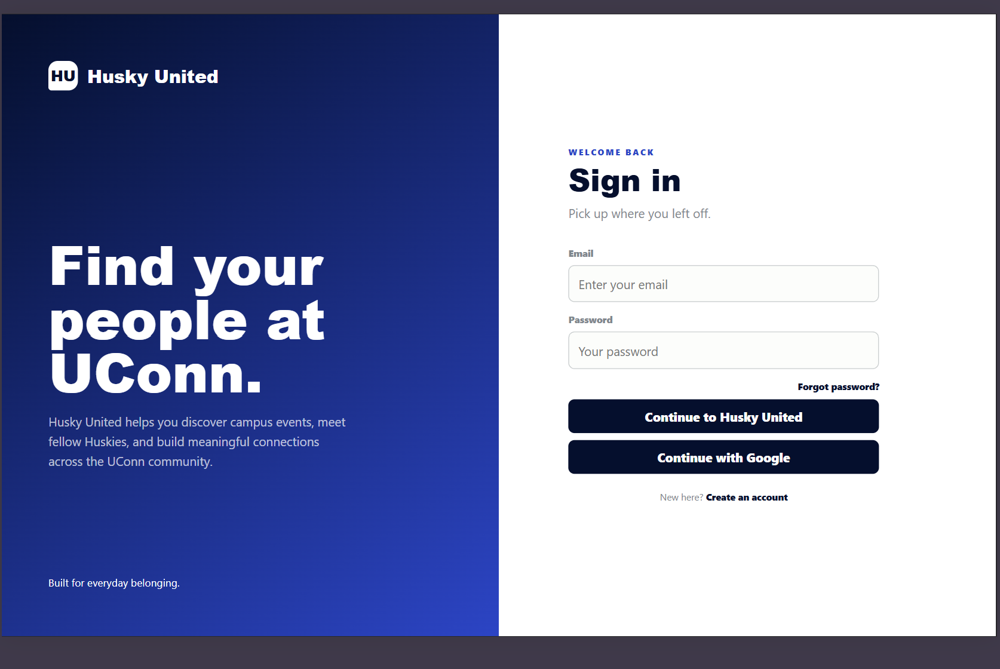

Husky United
A student-focused web platform designed to help UConn students discover connections, events, and campus resources.

Project Overview
A student-centered web application designed to make campus connections easier and more accessible.
Husky United is my senior project at the University of Connecticut. The platform focuses on helping students discover campus activities, connect with other students, and explore available university resources.
I designed and developed the platform using HTML, CSS, JavaScript, and Firebase, with features supporting user authentication, campus events, and student interaction.
Technologies Used
- HTML
- CSS
- JavaScript
- Firebase
- Google Maps API
Project Development & Process
Planning & Design
Husky United began with the idea of creating a digital space for students who may have difficulty finding campus activities or initiating connections with others. I planned the platform around student needs, developed initial layouts, and worked on creating an interface that would make important features easy to discover.
Development & Implementation
I developed the website using HTML, CSS, and JavaScript to create a responsive, multi-page experience. Firebase was integrated to support user authentication and store information for platform features, including campus events and participation. I also incorporated Google sign-in and map functionality to support a more interactive experience.
Challenges & Solutions
One challenge was connecting the front-end interface with Firebase while keeping information consistent across multiple pages. I worked through authentication setup, JavaScript module paths, and event data handling to improve reliability and functionality.
Final Outcome & Reflection
Husky United has allowed me to apply my front-end development skills to a larger interactive application. The project has strengthened my understanding of user experience, database integration, and developing features that serve a specific audience. As an ongoing senior project, I continue to refine its functionality, accessibility, and overall user experience.